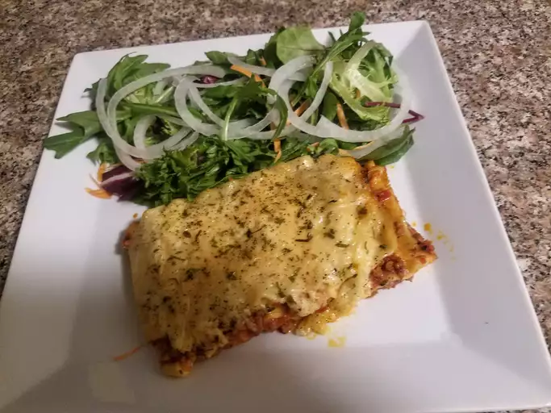

Lasagna
Back to All Recipes

How to Make Lasagna
Making lasagna can be time-consuming, but the results are well worth the wait. You'll find a ingredient list and step-by-step instructions in the recipe below, but let's go over the basics:
Ingredients:
- Meat
- Onion and Garlic
- Tomato Products
- Sugar
- Spices and seasoning
- Lasagna Noodles
- Cheeses
- Egg
How to Make Lasagna Step-By-Step
Here's a very brief overview of what you can expect when you make homemade lasagna:
- Make the meat sauce.
- Cook the noodles.
- Make the ricotta mixture.
- Layer the lasagna according to the recipe instructions.
- Cover with foil and bake.
- Let the lasagna rest before serving.
Back to All Recipes